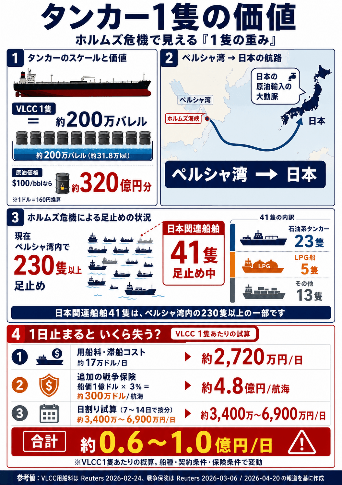

🗺️ ホルムズ海峡危機マップ通航状況・代替ルート・市場波及

🚨 警戒レベル：最高
📅2026年5月27日 09:17 JST


米下院GOP、対イラン戦争権限決議を土壇場で延期。 民主党が共和党議員4名を取り込み可決確実の情勢となったため、共和党指導部が採決を6月3日以降に延期。前回（5月14日）は212-212で辛くも否決。上院でも共和党議員4名が賛成票を投じており、トランプ政権の対イラン戦争遂行権限をめぐる議会との対立が深刻化している。
📰 出典：NPR（2026年5月22日）
イラン系メディア・タスニム通信（5/18 JST）は、イランが第2回イスラマバード交渉への参加に 合意していないと報じた。イランは米国の海上封鎖の継続と「過度な要求」を主な理由として挙げている。 米パキスタン仲介チームは5/19か5/20の開催を目指しているとされるが、イラン側から正式な確認は出ていない。
アラグチ外相は5/17にモスクワを訪問しプーチン大統領と会談。 「交渉膠着の根本原因は核濃縮ウランの取り扱い問題にある」と指摘し、 米国が求めるウラン濃縮モラトリアムへの受諾は困難との姿勢を示した。 プーチンはこれに先立ちUAE首長・ビン・ザーイドと電話会談しており、 ロシアが仲介役として関与を深める可能性が浮上している。
出典：タスニム通信（5/18 JST）・Reuters・Wikipedia 2025–2026 Iran–US negotiations（5/18確認）
トランプ大統領は5/16、「イランに合意しなければ非常に悪い時期（very bad time）が来る」と再警告し、 5/22を事実上の対話リミットと示唆した。米国はイランへの「1ページ14項目覚書（MOU）」を提示しており、 イランのウラン濃縮モラトリアム・制裁解除・ホルムズ開放の相互確認が柱となっている。 ただし米国は依然として凍結資産の返還を拒否しており、 イラン側は「過度な要求」として強く反発している。
イランの強硬派メディア・カイハン紙（5/17）は「全面報復を求める」との論評を掲載し、 ハメネイ後継・ホサイン・シャリアトマダリー師が停戦を公然批判するなど、 イラン国内の対話派と強硬派の亀裂が深まっている。
出典：Reuters・CNBC・Wikipedia 2025–2026 Iran–US negotiations（5/18確認）
| ルート | 輸送能力 |
🇯🇵 日本向け 万BPD・隻/週（推定） |
現況詳細 | 主なリスク | 状態 | |
|---|---|---|---|---|---|---|
| ⛔ |
旧ルート ホルムズ海峡本線 |
日量 約2,000万bbl 世界消費の約20% |
停止中 — 隻/週 |
4/18 イラン外相「完全再開」宣言。
ただし米軍封鎖は「取引100%完了まで」継続中（Trump明言）。
実際の商業船通航正常化には第2ラウンド交渉妥結が必要。
原油▼10%・Dow +1,020pt急反応。タンカー足止め41隻は解放待ち（4/28夜 出光丸通過・1隻減）。 出典：Reuters・AP通信・9 News Australia（4/18） |
米軍‑IRGC偶発衝突リスク。米海軍による拿捕・機雷除去作戦継続中。イラン「誤れば"死の渦"」と警告。 | 🔴 封鎖中 |
| 🟢 |
ルートB ヤンブー港経由 （サウジ東西PL） |
日量 700万bpd（輸送能力） ✅ 4/12 パイプライン全面回復 ⚠️ Khurais 30万BPD 生産未回復 |
— 万BPD — 隻/週 |
東西PL→ヤンブー→バベルマンデブ→日本。
4/12 パイプライン全面復旧（700万BPD）✅（サウジエネルギー省公式・Reuters確認）。
⬆ ヤンブー輸出量：戦前比330%増（日量247万BPD）・VLCC27隻がヤンブーへ向航中。 Manifa油田（▲30万BPD）復旧済み✅。 ⚠️ Khurais油田（▲30万BPD）は5/8時点でも復旧作業継続中・未完了。 ⚠️ 二重チョークポイント問題：ヤンブー発アジア向けはバベルマンデブ海峡（フーシ派リスク）を通過必須。 ただし日量200〜250万BPD分はエジプト・アイン・スフナ経由のSUMEDパイプラインでバベルマンデブを迂回可能（欧州向け限定）。 太陽石油（愛媛）3/28到着済み ✅。ルートA崩壊後の最重要代替ルート。 出典：Reuters・Bloomberg・Windward・OilPrice・サウジエネルギー省（4/12〜5/8） |
フーシ派による紅海・バベルマンデブ攻撃リスク。Khurais生産能力回復待ち。ルートA崩壊で負荷集中リスク。 | 🟢 全面回復（生産力一部低下継続） |
| 🔵 |
ルートA フジャイラ港経由 |
日量 約150〜180万bbl |
— 万BPD — 隻/週 |
ADCOPパイプライン→フジャイラ→ムンバイ沖積み替え→日本。 🔴 5/4 VTTIターミナル直撃・限定復旧も実態は不透明。 イランのドローン1機がUAEの防空網を突破しVTTI施設（Vitol・IFM・ADNOC共同所有）を直撃。 同時にADNOCスーパータンカー「バラカ」もドローン2機で攻撃を受け複合打撃。 UAE産原油輸出量は通常比58%減（日量135万BPD）に急落、100隻超が錨泊滞留。 一部バースは再開報告あるが、衛星画像では港内タンカー2隻・VLCC1隻のみ確認（5/7）。 革命防衛隊海軍がフジャイラを「イラン管理域」に宣言、ADCOPとホルムズの「二択同時崩壊」が確定。 出典：Bloomberg・Reuters・Windward・Kanoo Shipping・衛星画像分析（5/4〜5/8） |
イランによるADCOP終端部への繰り返し攻撃リスク。フジャイラ「イラン管理域」宣言による恒常的威嚇。UAEの防空能力限界露呈。 | 🔴 機能不全（58%激減・限定復旧） |
| 🟣 |
ルートC 🇺🇸 米国直輸入 （アラスカ・メキシコ湾岸） |
増量中 太平洋直行 約15日 |
— 万BPD — 隻/週 |
アラスカ（ANS）・メキシコ湾岸からの太平洋直輸。
4/25 第1便到着。日米首脳合意のもと急増中。
港湾インフラ・品質適合が課題。 🆕 メキシコ産原油（2026年7月・初便予定）：日量換算は小規模だが太平洋ルート約30〜35日で到着。3大チョークポイントを完全回避。 出典：Reuters・Bloomberg・日米首脳会談資料（3月）・UPI（3/19）・DiscoveryAlert（4/26） |
港湾含水制限・ANS品質適合コスト・価格プレミアム懸念。 | 📅 急拡大中 |
| 🟤 |
ルートC 🌍 南半球経由 （ブラジル・西アフリカ） |
拡大中 +40〜45日所要 |
— 万BPD — 隻/週 |
ブラジル（Tupi・Buzios）・ナイジェリア・アンゴラ産。
喜望峰→インド洋→日本ルート。3/28初到着済み。
本格化は早くて2026年6月以降。 出典：FreightWaves・Reuters（4/8） |
輸送期間大幅増・中国との調達競合・精製品質適合コスト。 | 📅 拡大中・準備段階 |
| 🟠 |
ルートD イラン通航料払い通過 |
実質停止 拿捕リスク大 |
停止中 — 隻/週 |
CENTCOM封鎖発動により実質機能停止。
トランプがイランへの通航料支払い済み船舶も拿捕対象と明言。
インド・パキスタン等との独立通航協定も事実上無効化リスク。 出典：National Review・JNS.org（4/12） |
米海軍による拿捕リスク大。現時点での利用は極めて危険。 | 🔴 事実上停止 |
| 📊 2026年5月22日 07:43 JST 更新 ── IRGC・PGSA管制下で選択的通航継続。5/20に24時間で26隻が管制通過（IRGC発表）。WTI $96.82（5/21終値）戦前比+58%。UAE・サウジ迂回積出・サハリン2・米国産による日本代替調達継続。代替ルート合計（A+B+C）の日本向け充足率：約65〜70%（IEA試算ベース）。 | ||||||
米CENTCOM の「自衛攻撃」（バンダルアッバース付近でイラン船舶2隻撃沈・5/26 JST）という激しい動きの中でも、アラグチー外相・ガリバフ議長はカタール・ドーハにとどまりカタール首相と交渉継続中（Times of Israel・Reuters 5/26）。MOU 14項目の「ホルムズ管制権・濃縮ウランの扱い」が最大対立点で、残存争点の詰めを行っている。Soufan Center（5/26）「イラン当局者はトランプの"largely negotiated"発言を裏付けている」。合意の骨格：①60日停戦延長②ホルムズ段階的再開（無課金・機雷除去）③米が港湾封鎖解除＋制裁一部免除④核交渉開始——「履行と引き換えの利益」原則。IRGC報復行動の有無とイランSNSC・最高指導者モジュタバ・ハメネイの批准が最終関門。WTI：$60〜75/bbl（合意成立・通航再開時）。
米CENTCOM 攻撃→IRGCの「報復権宣言」という連鎖がカタール協議を膠着させ、MOU署名なしの長期化に移行するシナリオ。イラン国内の強硬派がSNSCへの「攻撃への報復なき署名」を拒否し、最高指導者批准が実質的に不可能となる。外交の外形を保ちながらIRGC管制下の「選択的・許可制」通航が半永続化し戦前比95%減が常態化。シナリオAとの差異：IRGCの報復行動制御に失敗するか・SNSC内強硬派が交渉妨害するかが引き金であり、外交崩壊宣言なしに封鎖が固定化する点が特徴。日本向け通航は喜望峰ルートが常態化。WTI：$90〜108/bbl（部分封鎖長期化）。
カタール協議でイランがイスラエル正常化条件を公式拒否し、SNSC・最高指導者が署名を拒絶。MOU交渉が完全崩壊するシナリオ。最高指導者モジュタバ・ハメネイがIRGC強硬路線を公式支持し、通行料制度とPGSA管制海域を正式法制化。GOP戦争権限決議（6月3日再提起）が成立した場合、トランプの単独軍事行動も制約される。シナリオBとの決定的差異：Bは「交渉継続という外形を保ちながらの管理封鎖」であるのに対し、本シナリオは「MOU破綻→外交チャンネル閉鎖→封鎖の法的恒久化」という不可逆プロセスが特徴。機雷除去6ヶ月超・日本の喜望峰常態化・核交渉無期限停止。WTI：$108〜125/bbl（完全封鎖制度化）。
トランプが「大筋合意」を世界に向けて公言した後にイランが最終署名を拒否すれば、トランプは「イランに最後の機会を与えた」として政治的正当性を確保し軍事再攻撃を発動しやすくなる。米下院GOP戦争権限決議が6月3日に再提起され可決された場合、議会からの逆圧力でトランプが行動を迫られる政治的トリガーも発動しうる。空母3隻体制での精密攻撃再開・イランの報復ミサイル発射→地域全域への軍事衝突拡大が連鎖。シナリオCとの決定的差異：制度的封鎖（C）に対し、本シナリオは「発表崩壊→即時軍事行動」という政治的連鎖反応がトリガー。WTI：$110〜130/bbl超（軍事再開・最悪シナリオ）。